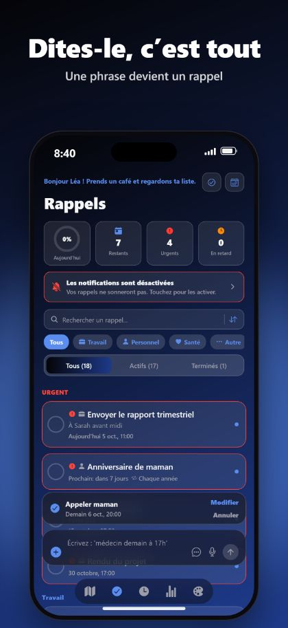
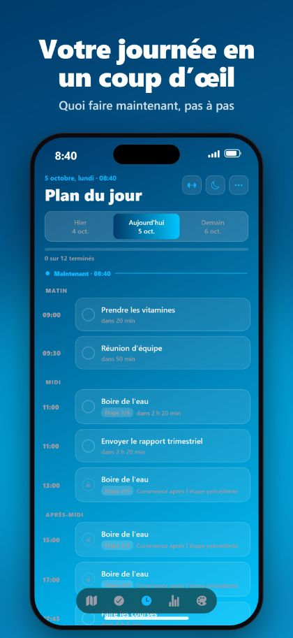
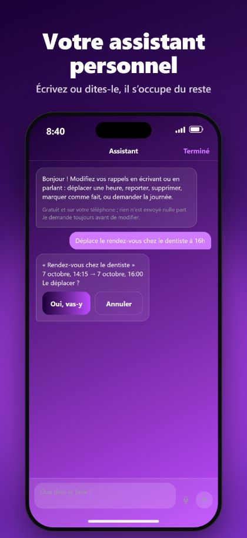

Mains libres avec Siri
Dites « Dis Siri, ajoute un rappel avec RemindMe ». Siri demande le jour et l’heure et l’enregistre sans ouvrir l’app.
RemindMe transforme une phrase, écrite ou dite, en rappel avec la bonne date, la bonne heure et la bonne répétition. Sans menus, sans formulaires.
Gratuit sur iPhone et iPad. Sans compte, sans publicité.



Appeler maman demain à 20 hAppeler maman · demain, 20 h
Prendre mes médicaments tous les jours à 9 h et 21 hPrendre mes médicaments · tous les jours, 9 h et 21 h
Boire de l’eau toutes les 2 heures entre 9 h et 21 hBoire de l’eau · toutes les 2 heures, de 9 h à 21 h
Alarme demain à 6 h 30Alarme · demain, 6 h 30
Dites « Dis Siri, ajoute un rappel avec RemindMe ». Siri demande le jour et l’heure et l’enregistre sans ouvrir l’app.
Sous iOS 26, un rappel peut sonner comme une vraie alarme, même en mode silencieux ou en Concentration.
Placez un lieu sur la carte et soyez prévenu à l’arrivée ou au départ, même app fermée.
Un planning avec seulement ce qui reste à faire aujourd’hui, un calendrier, des séries et le report.
Pas de compte. Pas de publicité. Pas de suivi. Vos rappels restent sur votre iPhone et votre iPad.
Une mise en page aérée pour les grands écrans, toutes les orientations, Split View, widgets et beaux thèmes.
RemindMe est une app de rappels pour iPhone et iPad. Vous écrivez ou dites une phrase et elle crée un rappel avec la bonne date, la bonne heure et la bonne répétition.
RemindMe se télécharge gratuitement et ne contient pas de publicité.
Non. Il n’y a ni compte ni inscription. Vos rappels restent sur votre appareil.
Oui. Dites « Dis Siri, ajoute un rappel avec RemindMe ». Siri demande le jour et l’heure et enregistre le rappel sans ouvrir l’app. « Ajoute un rappel détaillé » et « Ajoute un rappel de lieu » fonctionnent aussi.
Sous iOS 26 et plus, oui. RemindMe peut faire sonner une vraie alarme, même en mode silencieux ou en Concentration.
Le turc, l’anglais, le français, l’allemand et l’arabe, y compris les longues phrases et plusieurs rappels à la fois.
Oui. Pas de compte, pas de publicité, pas de suivi, et vos rappels restent sur votre appareil.